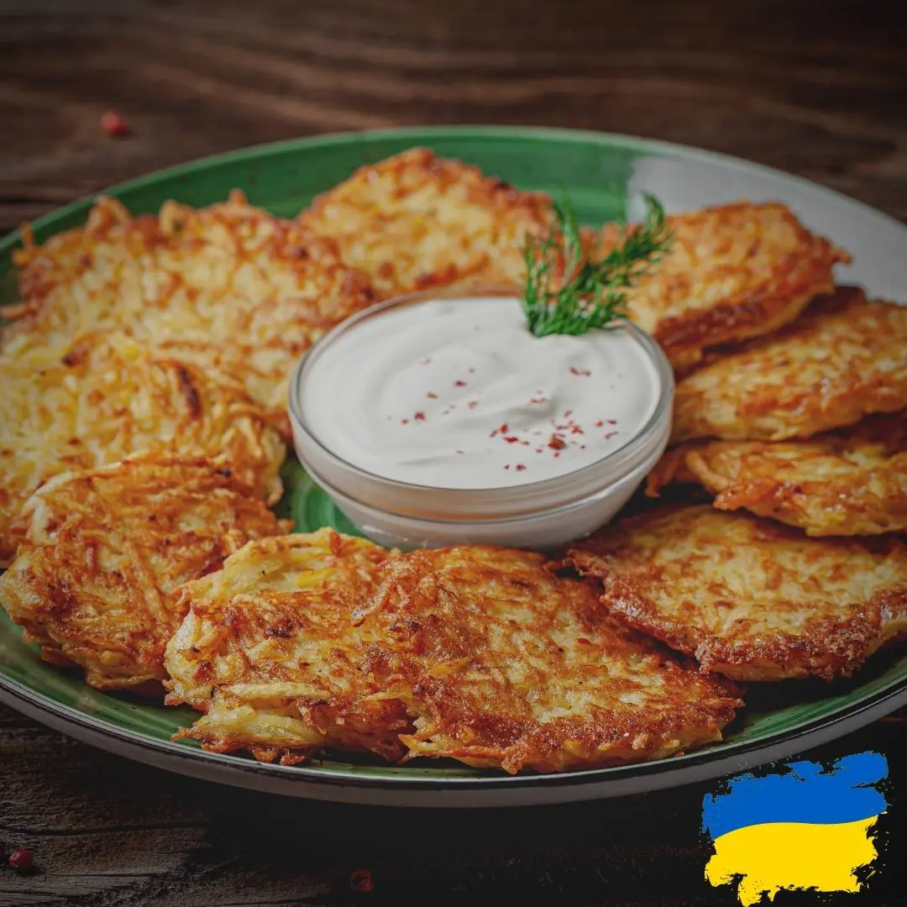

Deruny – Ukrainian Potato Pancakes

Description
Potato pancakes or deruny are one of the most beloved meat-free dishes in Ukraine. They have been popular throughout history and saved many lives during the Ukrainian Terror Famine in 1932-33. Back then, people would make deruny using anything they could get hold of–linden leaves, sorrel leaves, left over nuts and grains. Fortunately, everyone can enjoy the yummy potato-based version nowadays.Crunchy and filling, deruny are very easy to make, even if you’re a kitchen newbie. source
Ingredients
- 5 medium size potatoes (about 1.5 lb)
- 1 onion
- 1 egg
- 3 Tbsp of all purpose flour
- 1 Tbsp of sour cream
- 1 tsp of salt and pepper to taste
- oil (for frying)
How to Make Deruny
- Prep all the ingredients. Peel potatoes and onion.
- Take big bowl, grate potatoes and onion (on the star shaped grater), taking turns and mixing grated mixture. Onion juice will keep potatoes from browning
- Add flour, egg, sour cream and mix it well, than add 1tsp of salt and some black pepper, batter should be still liquid enough so you can easily ladle it
- Warm up a skillet with 2-3 Tbsp of oil over medium/high heat. Add 1 heaping Tbsp of mixture at a time to the skillet fry on one side until golden brown in color, then flip to other side and fry for the same amount of time. Repeat the same procedure for the rest of the batter
- Warm up a skillet with 2-3 Tbsp of oil over medium/high heat. Add 1 heaping Tbsp of mixture at a time to the skillet fry on one side until golden brown in color, then flip to other side and fry for the same amount of time. Repeat the same procedure for the rest of the batter
source